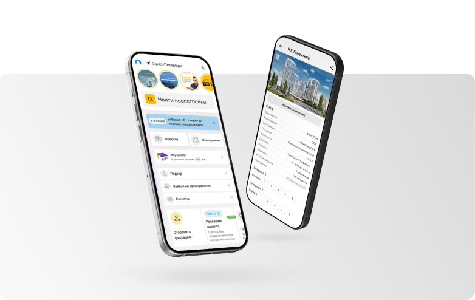

Стадия проекта
Старт продаж позволяет выбрать более сильные лоты до расширения ценового диапазона.
Подготовили обновлённую презентацию проекта Мангазея в вашем стиле: понятная структура, практические выводы, визуальные материалы и сценарии покупки под разные цели — для жизни, инвестиций и семейного расширения. Отдельно добавили текстовый презентационный блок по «Мангазее» с акцентом на квартиры, расположение и инфраструктурный контекст.

Мангазея — современный жилой проект Москвы с акцентом на комфортную среду и продуманную структуру повседневной жизни. Формат старта продаж позволяет выбрать лоты с оптимальным балансом цены, планировки и перспективной ликвидности.
В рамках презентации проекта мы фокусируемся на трёх параметрах: качество лота, финансовая модель покупки и сценарий владения (для жизни, аренды или инвестиционной стратегии).
По вашему запросу добавили отдельный текстовый блок-презентацию для «Мангазеи», чтобы ключевые преимущества можно было быстро считать прямо со страницы: без перегруза терминами и с фокусом на практическое сравнение.
В презентационном тексте выделили разные форматы лотов: для первого собственного жилья, для семейного апгрейда и для инвестиционного входа. Акцент сделали на удобстве планировок и потенциале ликвидности.
Отдельно описали локационные преимущества: транспортную связность, доступ к городской инфраструктуре и общее качество окружения, которое важно для жизни, аренды и последующей перепродажи.
На старте продаж ключевая задача — выбрать сильный лот до расширения ценового диапазона и зафиксировать оптимальные условия входа. По проекту Мангазея мы рекомендуем принимать решение после сравнения альтернатив в сопоставимом бюджете и оценки полного сценария владения.
Старт продаж позволяет выбрать более сильные лоты до расширения ценового диапазона.
Баланс между ценой входа, качеством планировки, сроками и потенциальной ликвидностью.
Для жизни, под аренду или с горизонтом перепродажи после перехода проекта в следующий ценовой этап.
Изображения добавлены в статью как отдельный блок для быстрого визуального анализа проекта.
Да, при условии корректного подбора лота и финансовой модели под ваш ежемесячный комфортный платеж.
Нужно считать полный сценарий: цена входа, дополнительные расходы, срок реализации и альтернативы в том же бюджете.
Да, мы готовим сравнительный лист по Москве и МО с приоритетом на ваш сценарий покупки и горизонт решения.
Мы помогаем пройти весь путь: от первичной диагностики цели и отбора лотов до проверки условий сделки и финального подписания. В фокусе — прозрачность решения и соответствие объекта вашей задаче.
Контакты для быстрой связи: +7 985 761-48-85, @AlexSavushkin.
Размещаем ссылки на карточки объектов в вашем Нмаркет: